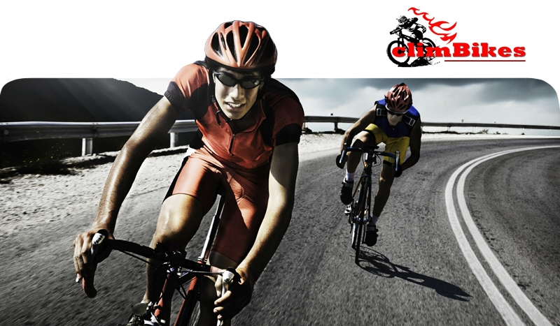
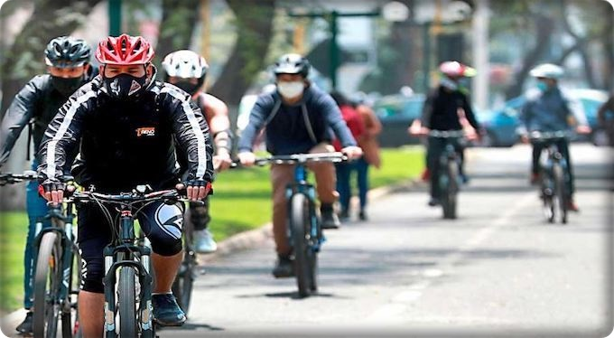

¡SEAN BIENVENIDOS A CLIMBIKES!
¿Quiénes somos?
Somos una academia que trabajamos mano a mano con nuestros estudiantes por el amor a este deporte, formando buenos deportistas aptos, tanto como para participar en competencias y ser un profesional o simplemente por ócio.
Nuestra misión:
Fomentar este deporte para que más personas se animen a practicarlo, brindando a sus asociados, familiares e invitados un ambiente agradable. Calidad en las actividades a desarrollar, departiendo y estrechando lazos de amistad.
¿Por qué elegirnos?
- Facilitamos desde metodologías de entrenamiento, bicicletas y herramientas del deporte, y hacemos seguimiento para lograr el progreso contínuo en esta disciplina.
- Facilitamos el acceso a bicicletas de segunda mano para empezar con los entrenamientos.
- Brindamos material teórico sobre el deporte, metodologías de entrenamiento, fichas de seguimientos, etc.
- Brindamos talleres de capacitación para atletas y entrenadores, hacemos seguimiento para el aprendizaje de figuras básicas a avanzadas.
¡Buscamos personas interesadas en promover el deporte!

¡Beneficios del ciclismo!
El ciclismo tiene muchos beneficios, algunos son más conocidos que otros y, además de que todos podemos disfrutar de ellos fácilmente. Son mucho más extensos que ahorrarte tiempo en tus traslados, dinero en la manutención de un automóvil particular o el pasaje del transporte público.
- Mejora las funciones cognitivas:
Pedalear todos los días es un potente combustible para tu cerebro.
- Fortalece tu sistema inmunológico:
Según un estudio, muestran que los ciclistas preserveran la masa muscular y la fuerza con la edad, al tiempo que mantuvieron niveles estables de grasa corporal y colesterol.
- Contamina menos:
La bicicleta es un medio de transporte limpio. Todos debemos preocuparnos por la conservación del medio ambiente y esta es una opción de movilidad no contaminante perfecta.
- Incrementa la expectativa de vida:
La actividad física de manera regular reduce el riesgo de mortalidad de diversos factores como hipertensión, diabetes, cáncer, entre otros. Además, también reduce el riesgo de desarrollar enfermedades mentales, tales como la depresión y enfermedades crónicas como el parkinson.
- Fortaleces más que los músculos de las piernas:
Además de ejercitar los músculos de las piernas, también te ayudará a formar los glúteos, abdominales, brazos y hombros.
- Evita la obesidad y mejora el control del peso:
Practicar ciclismo aumenta tu tasa metabólica, desarrolla músculo y quema grasa corporal, quemando hasta 300 calorías por hora.
- Reduce los niveles de estrés:
Como ya lo habíamos mencionado, el ejercicio aumenta tu salud general y tu sentido de bienestar, lo que aporta energía a tu ritmo de vida todos los días.